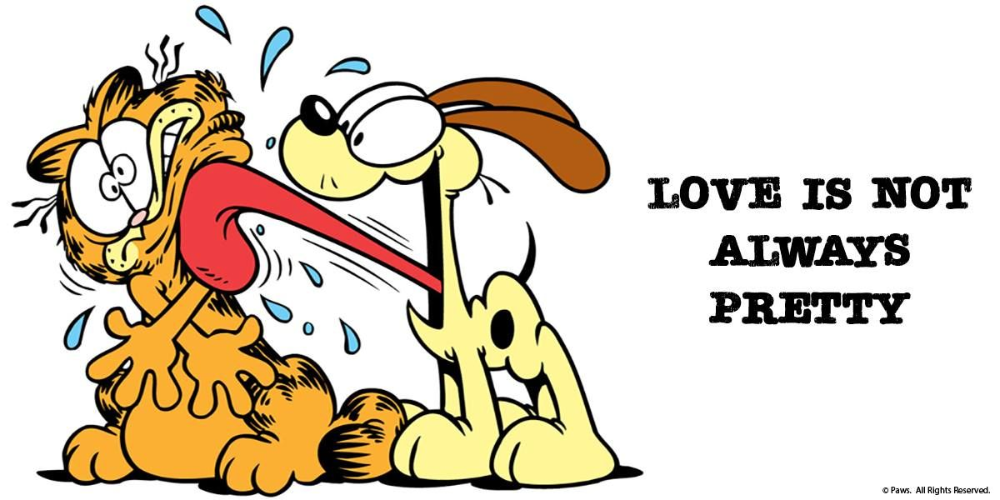

|
Odie é um cachorro fictício que aparece
na história em quadrinhos Garfield de Jim Davis . Ele também fez aparições na série de televisão de animação Garfield
and Friends e The Garfield Show , dois filmes de ação ao vivo / CGI e três filmes totalmente CGI .
|
| Odie é o primeiro personagem animal
que não fala, ele age como o Cachorro Normal. No O Show do Garfield, ele pode falar algumas frases curtas e frases inteligíveis.
No Garfield e seus Amigos, ele pode falar mexendo a boca, no episodio que o Garfield tava contando história de avião, Odie fala latindo.
|
|  |
| Em 1978, o Odie aparece com orelhas pretas, para não confudir com Snoopy do
Peanuts, ele mudou de cor das orelhas para marrom em Setembro de 1979. |
Você também gosta do Odie? Ficou curioso? |
Veja um episódio em: Odie Detetive
|
|
| Odie nasceu no 8 de Agosto de 1978 no lugar
desconhecido pra pais desconhecidos, ele foi vendido na loja de animais quando sendo capturado por pessoas do abrigos do animais, ele
conheceu o Garfield pela primeira vez, ele foi adotado por Lyman. Quando o Lyman desapareceu em 1983, Jon adotou o Odie. |
|